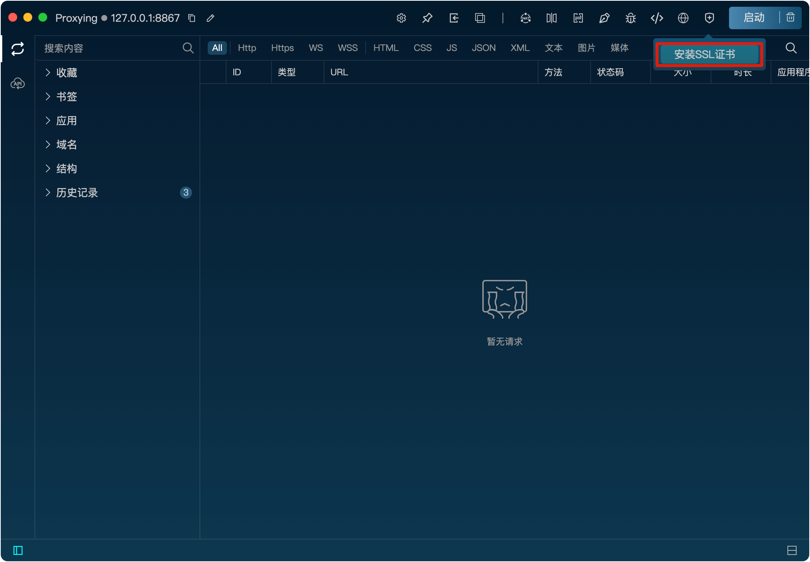
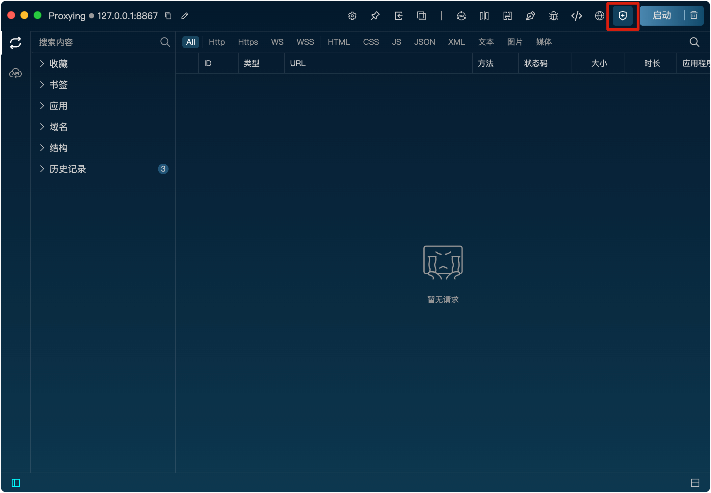

安装证书
为何要按住证书？
Listen使用中间人（MITM）技术抓取和分析HTTPS流量，当客户端与代理服务器进行通信时，代理服务器需要重签远程服务器的SSL证书。为了保证客户端与代理服务器成功进行SSL握手通信，需要将代理服务器的根证书安装到客户端本地的证书管理中心。
如何安装证书
Listen提供了一键按住证书的功能，只需点击右上角的安装证书按钮即可自动安装证书到本地用户证书管理中心。

安装成功后，SSL图标将高亮显示。
